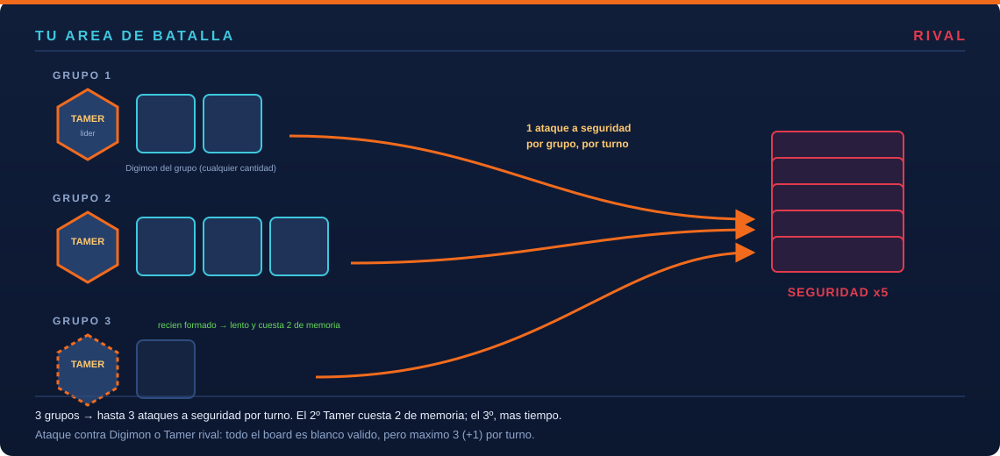
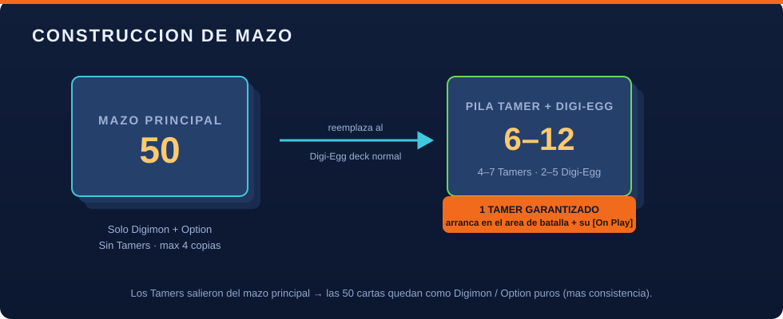
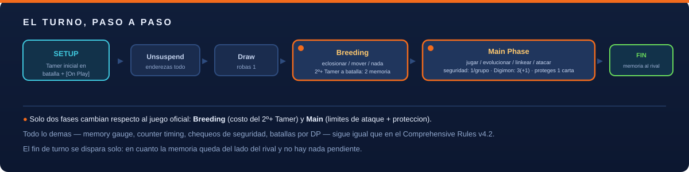
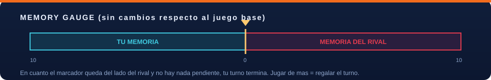

Gating de Tamer
No jugás ningún Digimon del mazo principal hasta tener 1 Tamer en batalla. Siempre hay al menos uno: piso duro.
Cada Tamer lidera un grupo. Un ataque a la seguridad por grupo. La única defensa pasiva real es evolucionar.
Un formato casero que corta los mazos de enjambre sin prohibir una sola carta.
En el Digimon Card Game base, la pila de seguridad son solo 5 cartas y el límite de "1 ataque a seguridad" es por Digimon. Un mazo de enjambre —muchos cuerpos baratos, cero desarrollo, cero evolución— puede cerrar la partida en el turno 3-4. Repetitivo y poco interesante.
Tamer Tactics ataca ese problema de raíz, sin banear nada:
| Juego base | Tamer Tactics | |
|---|---|---|
| Límite de ataque a seguridad | 1 por Digimon | 1 por grupo liderado por un Tamer |
| Conseguir otro "carril" de ataque | gratis: jugás otro Digimon | lento y caro: cada Tamer nuevo cuesta tiempo y memoria |
| Defensa pasiva | quedarte quieto (tu Digimon sin suspender no es blanco) | ninguna — todo el board es blanco; la única defensa es más DP |
🥚 In-Training→🦎 Rookie→🦖 Champion→🐲 Ultimate→⚡ Mega
[On Play] se resuelve.
Tamer Tactics se apoya sobre el Comprehensive Rules Manual v4.2. Todo lo que no está en esta lista funciona exactamente igual que en el juego oficial.
| Área | Cambio |
|---|---|
| Mazo | Mazo principal de 50 = solo Digimon + Option. Nueva pila Tamer + Digi-Egg (4-7 Tamers + 2-5 Digi-Egg, total 6-12). Los Tamers, todos distintos — sin copias repetidas. |
| Arranque | Cada jugador coloca 1 Tamer directo en el área de batalla en la preparación; su [On Play] se resuelve ahí. Sin "turno muerto". |
| Tamers | Entran por eclosión, no se juegan de la mano. El 2.º Tamer en adelante cuesta 2 de memoria para moverlo a batalla. Un Tamer nunca digivoluciona a Digimon. Siempre hay ≥1 Tamer tuyo en batalla (el último es inmune a la remoción rival). |
| Grupos | Cada Digimon que entra al área de batalla se une a un Tamer propio. Los efectos de "tus Digimon" solo alcanzan al mismo grupo. Digivolución y DNA: materiales del mismo grupo. |
| Ataque a seguridad | 1 por grupo, por turno (antes: 1 por Digimon). |
| Ataque a Digimon / Tamer | Cualquier Digimon rival es blanco, suspendido o no. Un Tamer solo si una carta lo habilita. Techo absoluto de 3 (+1 de keyword) por turno. |
| Protección | 1 carta propia por turno (jugada / evolución / link / re-agrupada) queda intocable hasta tu próximo turno. Máx. 2 veces por línea evolutiva. |
| Legalidad | Se usa la lista oficial de Bandai (Banned / Restricted / Banned Pairs). El formato no agrega prohibiciones propias. |
No jugás ningún Digimon del mazo principal hasta tener 1 Tamer en batalla. Siempre hay al menos uno: piso duro.
Cada Digimon que entra se une a un Tamer propio. Ese Tamer y sus Digimon son un grupo: un board independiente.
"Tus Digimon" solo alcanza a los del mismo grupo que la fuente. Digivolución y DNA: materiales del mismo grupo.
1 ataque a la pila de seguridad por grupo, por turno — no por Digimon. Ahí muere el enjambre de un solo grupo.
Podés atacar cualquier Digimon rival, esté suspendido o no. Techo: 3 (+1) ataques a Digimon/Tamer por turno.
Blindás 1 carta propia por turno (jugada / evolución / link / re-agrupada). Intocable un turno. Máx. 2 veces por línea.

| Zona | Regla |
|---|---|
| Mazo principal | 50 cartas exactas. Solo Digimon y Option — los Tamers no van acá. Máx. 4 copias por número de carta. |
| Pila Tamer + Digi-Egg | 4-7 Tamers + 2-5 Digi-Egg, mezclados. Total 6-12. Cada Tamer, un número de carta distinto (sin repetir); los Digi-Egg, hasta 4 copias. |
| Preparación | Piedra-papel-tijera → barajar todo → cada quien busca 1 Tamer y lo pone en su área de batalla → resolver su [On Play] → robar 5 + mulligan → seguridad → memoria a 0 → turno 1. |
[On Play] de los Tamers sí funcionan (al entrar a batalla), evaluá cada Tamer por su cuerpo/DP, sus pasivas y su [On Play]. Y como no se puede repetir Tamer, elegí 4-7 que se complementen.

Solo dos fases cambian: Breeding (mover el 2.º+ Tamer a batalla cuesta 2 de memoria) y Main (1 ataque a seguridad por grupo, 3 (+1) a Digimon/Tamer, y 1 carta protegida). El resto —memory gauge, counter timing, chequeos de seguridad, batallas por DP— es idéntico al reglamento oficial.
Se leen acá mismo (o se abren en GitHub). El repo es la fuente de verdad.
El reglamento completo de Tamer Tactics. Empezá acá si querés jugar.
Leer → 6 rondas · 42 sims · +2 parchesQué se probó, qué falló y por qué existe cada regla.
Leer → para mesa realLos números y riesgos sujetos a datos de partidas con jugadores.
Leer → overviewLa versión corta, con todos los gráficos del formato.
Leer → Comprehensive Rules v4.2Extracto organizado del reglamento oficial de Bandai.
Leer → oficial + estrategiaReglas oficiales de deckbuilding y guía de la comunidad.
Leer → 2020 → hoyCronología completa de productos del juego.
Leer → binariosComprehensive Rules, Official Rule Manual, glosario, erratas, reglas de torneo.
Abrir en GitHub ↗Sin JavaScript, cada tarjeta abre el documento directamente en GitHub.
6 rondas de simulación, 42 escenarios corridos por subagentes independientes.
Pase de revisión de reglas: cerrados los huecos de interacción del sistema de grupos y de las vías de entrada al campo. Ruleset congelado.
Primer parche: los Tamers de la pila deben ser todos distintos (1 copia por Tamer).
30-50 partidas con jugadores humanos y decklists del meta actual. Lo que hay que medir está en OPEN_ITEMS.md.
Recalibración con datos reales: winrate de primer jugador, curva de "grupos por turno", y los números que hoy están afirmados pero no probados en mesa.